Not every home upgrade needs a contractor, a big budget, or even a full weekend.
These 13 projects cover walls, storage, and the smaller textile details that quietly change how a room feels, all doable with basic tools and a free afternoon.
Most of them scale up or down depending on how much time and effort gets put in.

1. Framed Fabric Art
A striking piece of fabric, stretched and framed like a canvas, creates custom wall art without any painting skill at all.
This is a fast way to add a large-scale piece to a wall for far less than a comparably sized framed print would cost.
A bold, patterned fabric makes the biggest visual impact relative to the minimal effort involved.
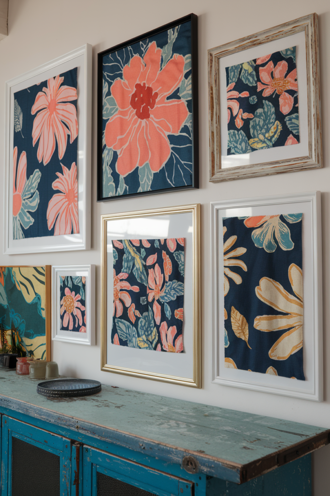
2. A Macramé Wall Hanging
A simple macramé piece adds texture to a bare wall and works as a lower-commitment alternative to framed art.
Basic knot patterns are genuinely beginner-friendly, even for someone who's never tried fiber art before.
This pairs naturally with several of the other textile projects on this list for a cohesive, layered look.
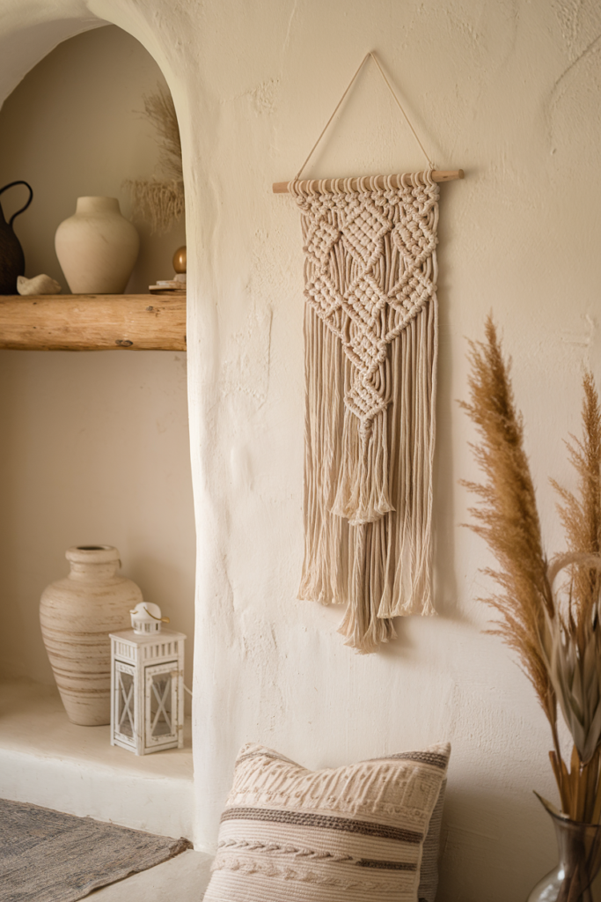
3. String Light Ambiance
A string of warm-toned lights along a shelf, headboard, or window frame adds ambient glow that overhead lighting alone can't provide.
This is one of the lowest-effort projects on the entire list, no tools, no skill required, just placement.
Battery-powered or plug-in versions both work, depending on how close the nearest outlet actually is.
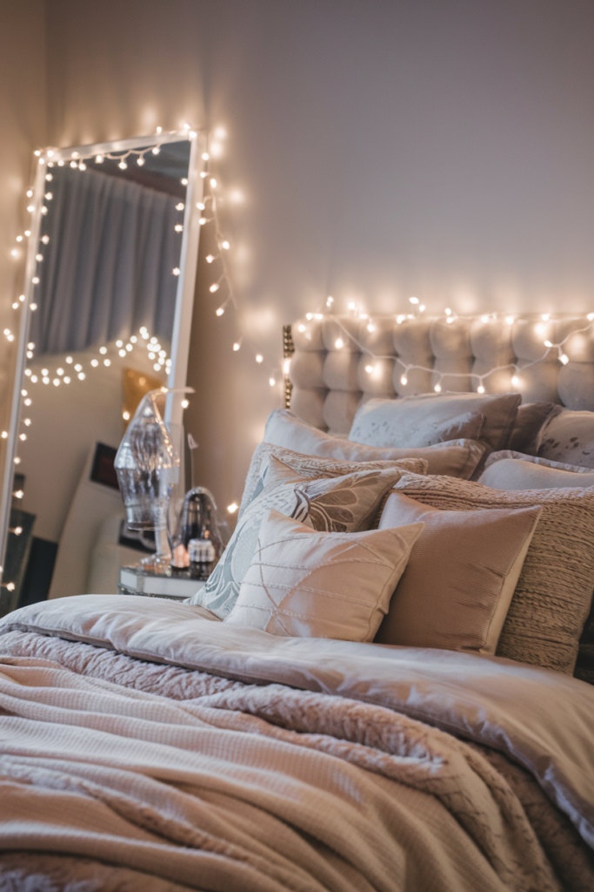
4. A Curtain Tie-Dye Refresh
Plain curtains take a tie-dye or ombré dye treatment surprisingly well, turning a basic window treatment into a genuine style statement.
This is one of the more forgiving textile projects on this list, since imperfect dye patterns tend to look intentional rather than botched.
A cheap pair of plain curtains is a better starting point than risking an expensive existing set.
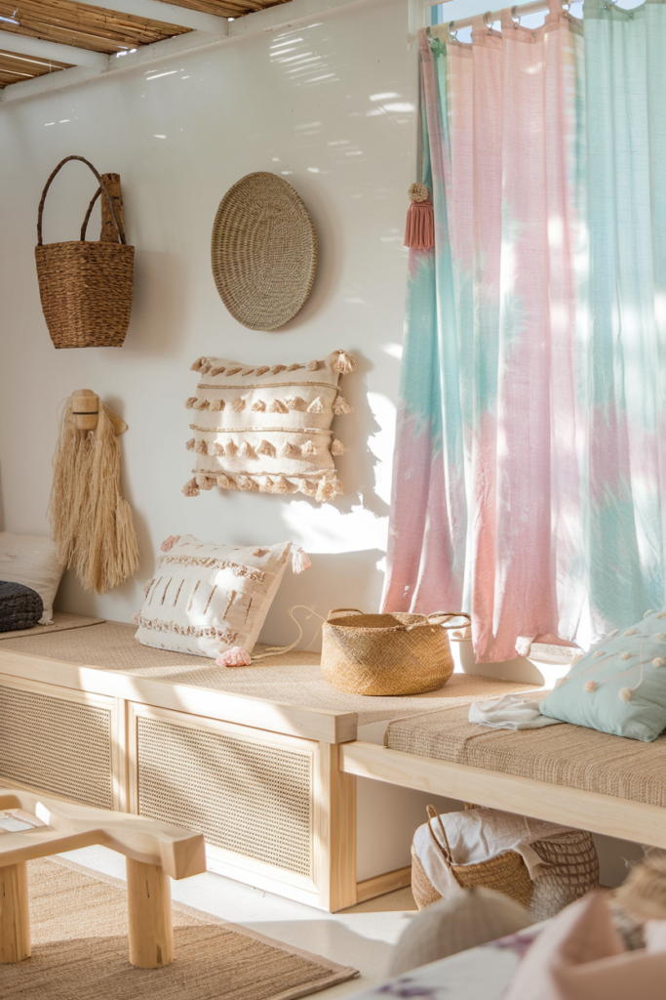
5. A Vintage Rug Hack
Fabric paint applied directly to a plain or worn rug can recreate a vintage pattern look for a fraction of what an actual vintage rug would cost.
This works especially well on a rug that's structurally fine but visually boring or dated.
Testing the pattern on a small hidden corner first avoids any irreversible surprises.
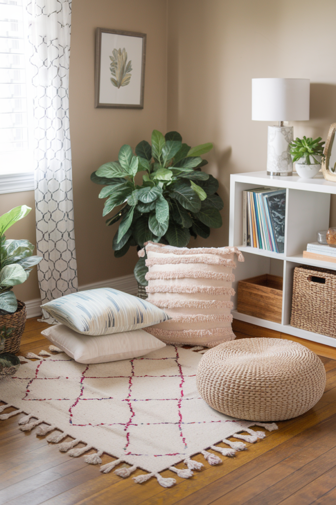
6. A Terracotta Pot Makeover
Plain terracotta pots take paint, stain, or a simple pattern well, turning a basic planter into a genuinely styled object.
This is a low-cost, low-risk project, terracotta is forgiving to work with and cheap to replace if a first attempt doesn't land.
A cohesive set of painted pots does more for a windowsill or shelf than mismatched plain ones ever will.
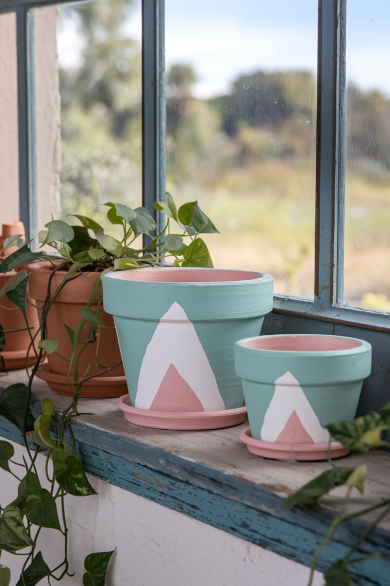
7. Mason Jar Organizers
A row of mason jars, mounted or simply grouped on a shelf, organizes small items, craft supplies, bathroom essentials, kitchen staples, while looking intentional rather than cluttered.
This is a flexible project that adapts to almost any room needing small-item storage.
A label on each jar turns function into a small styling detail too.
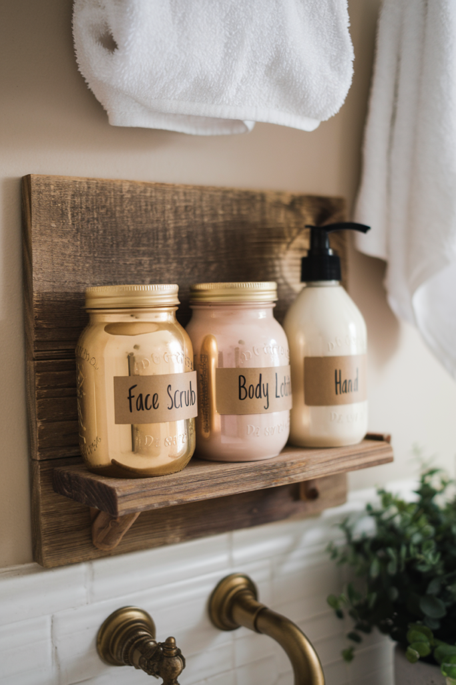
8. Rope-Wrapped Storage Baskets
Wrapping plain storage bins or baskets in natural rope or jute instantly upgrades their look without replacing them entirely.
This is one of the cheapest projects on this list, since it works with baskets already on hand.
A hot glue gun and an afternoon are genuinely all this one requires.
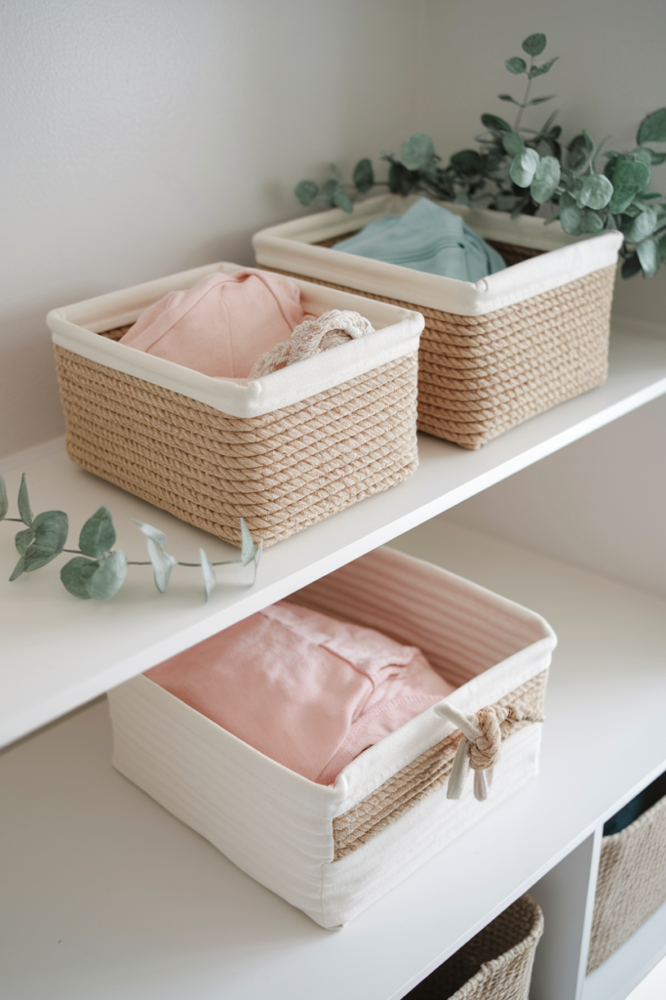
9. Upcycled Furniture With Real Character
An old dresser, side table, or chair, repainted or reupholstered, brings more personality than most new furniture at a fraction of the cost.
This is a genuinely flexible project, a simple coat of paint takes an afternoon, while reupholstering takes more planning and skill.
Secondhand pieces with good bones are usually a better starting point than anything already in rough structural shape.
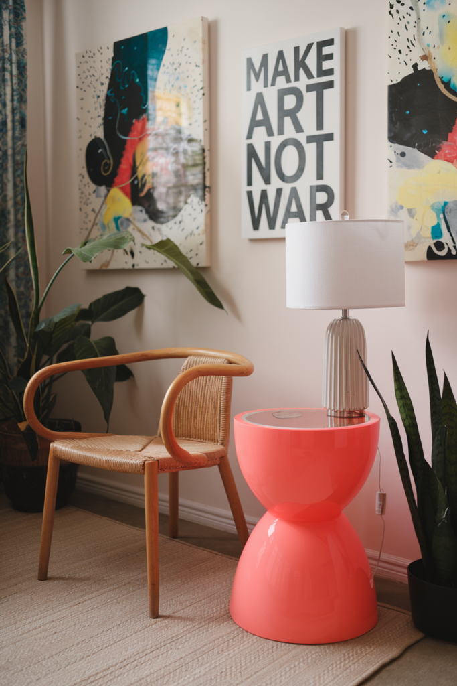
10. Floating Shelves for Real Storage
A simple floating shelf adds genuine storage and display space to a wall that was otherwise doing nothing.
This works especially well over a desk, above a bed, or in a kitchen that's short on cabinet space.
A basic bracket-and-board version is a genuinely approachable first carpentry project for anyone new to DIY.
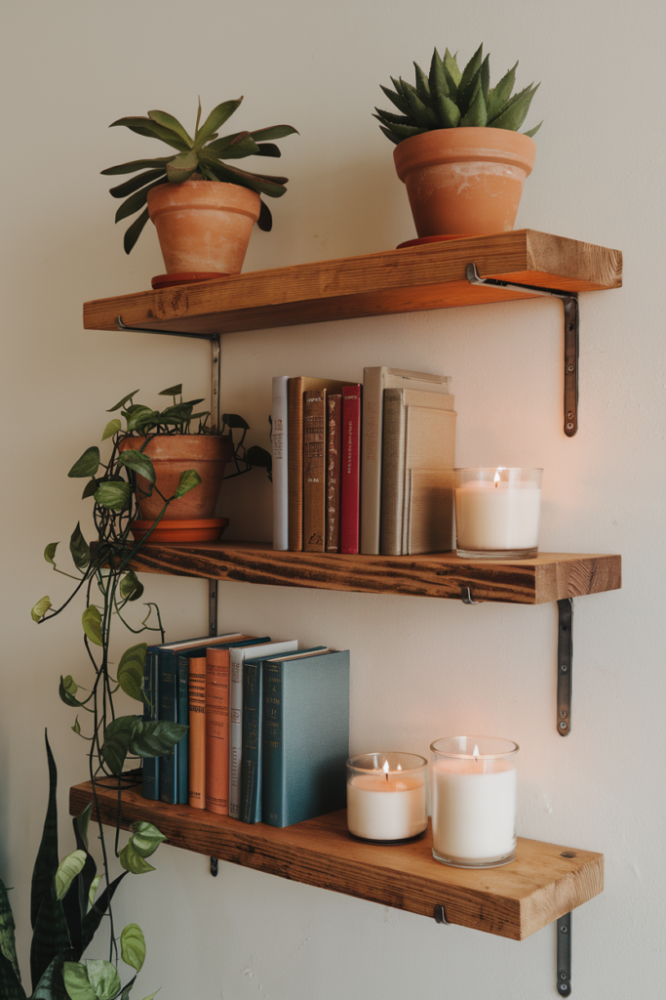
11. A Gallery Wall That Actually Reflects You
A collection of personal photos, art, and small objects arranged together turns a blank wall into the most personal spot in the room.
Laying the arrangement out on the floor first, before any nails go in the wall, saves a lot of patching later.
A loose, varied layout tends to feel more authentic than a perfectly symmetrical grid.
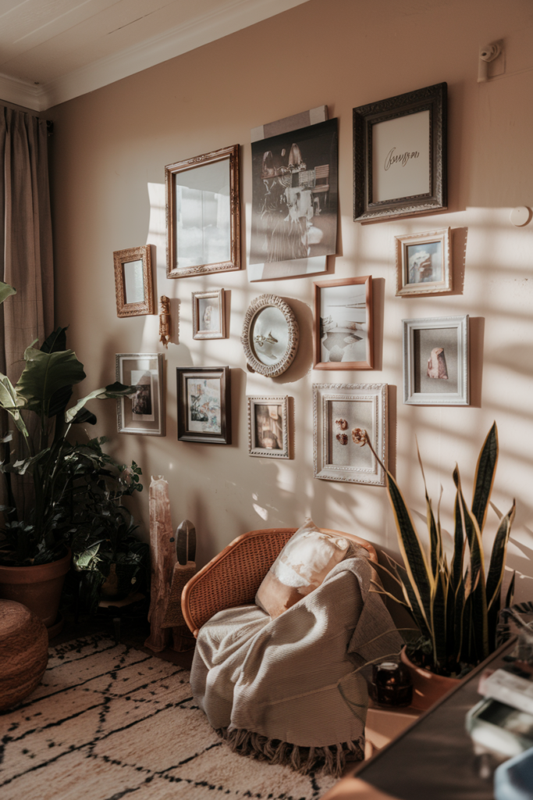
12. A Peel-and-Stick Tile Backsplash
A peel-and-stick tile backsplash gives a kitchen or bathroom a real design upgrade without any grout, cutting, or professional installation.
This is one of the most dramatic transformations on the whole list relative to the actual effort involved.
Worth measuring the space carefully before buying, since running short mid-project is a common first-timer mistake.
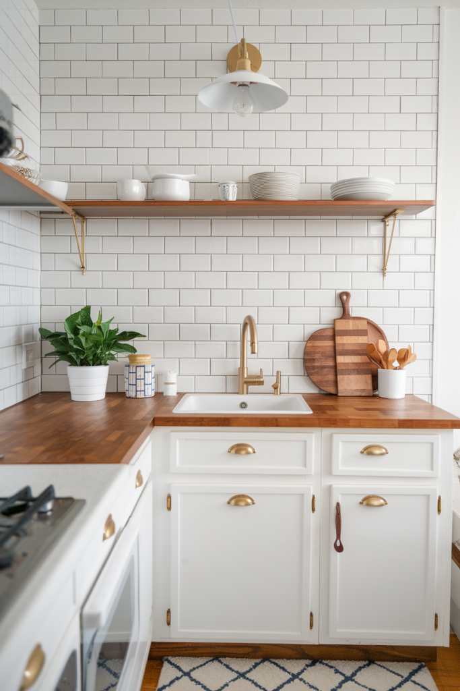
13. A Painted Accent Wall
A single bold wall resets a whole room's mood without the commitment of painting every surface.
This is one of the most forgiving projects on this list, a mistake is just a second coat away from being fixed.
No art degree required, despite how intimidating a paint roller can feel at first.
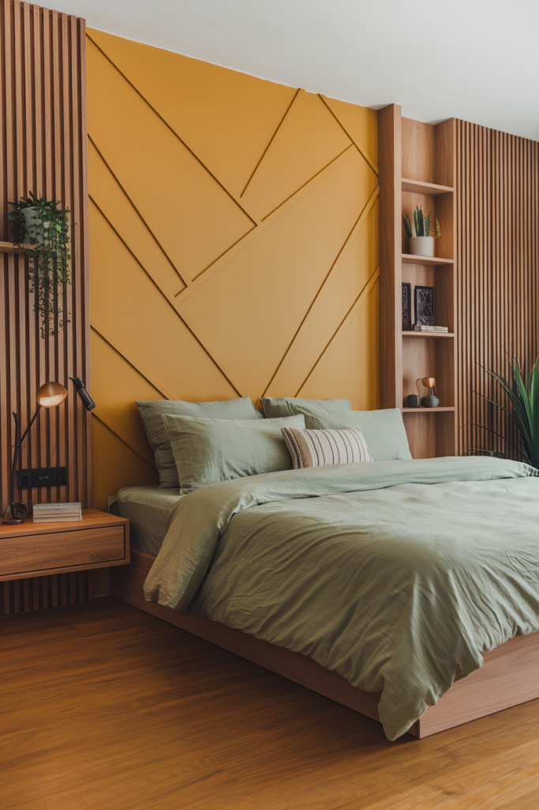
Wrapping It Up
None of these 13 projects need to happen in the same weekend.
Pick whichever one solves the most obvious gap in a room right now, storage, a bare wall, outdated textiles, and build from there.
Small, deliberate DIY projects add up to a space that feels considered, without ever needing a full renovation.
One finished project is worth more than five half-started ones sitting in a closet somewhere.